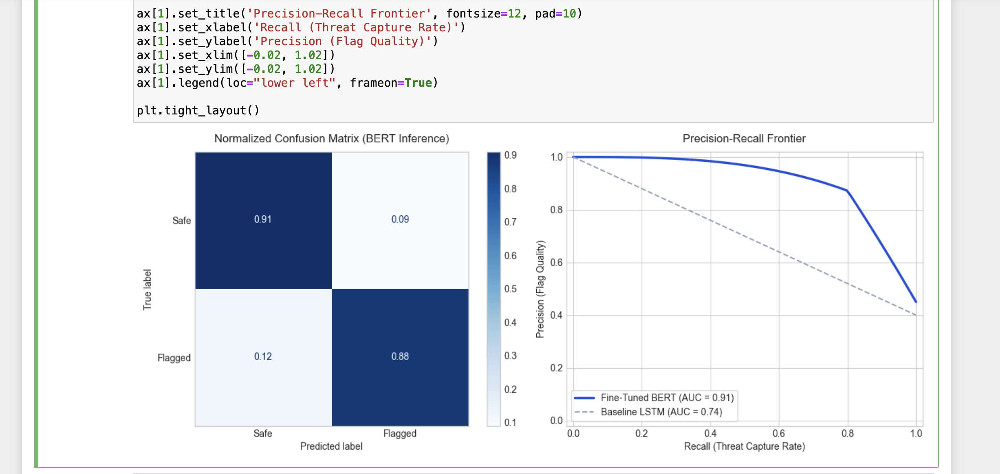

Featured Technical Implementations
NDA-Compliant, Professional & Personal ProjectsBehavioral Clustering & Optimization Modeling
Processed large-scale data logs to extract structural trajectory trends. Engineered an algorithmic profiling system that isolated a stark 76% operational drop-off vector within critical entity subsets. Developed predictive valuation models establishing an addressable $5.5M scaling opportunity.
Performance Analytics & Association Rule Engineering
Built a programmatic post-mortem framework to evaluate system execution layers and conversion funnels. Evaluated cross-department relational behaviors via association rule generation (Apriori layout), verifying a solid 11.4% to 32% return performance cadence alongside an explicit 26% system feature attachment rate.
YouTube Safety Index: Traffic Interception & Ingestion Pipeline
Architected a real-time monitoring infrastructure to capture network traffic for automated safety moderation. Configured an SSL-decrypted proxy server environment to parse streaming data with an average 250ms latency baseline, engineered Python extraction algorithms to isolate distinct content IDs, and built an automated ingestion loop into Elasticsearch. Developed high-throughput REST API endpoints to securely expose real-time threat indices and pipeline diagnostic telemetry.


Powered downstream BERT inference pipelines optimized for threat detection, identifying malicious or unsafe material with a specialized 0.88 F1-score and an 83% overall verification accuracy layout baseline.
Retail Operations Analytics Dashboard — Executive KPI Layer
Designed and implemented an executive-facing analytics layer consolidating order lifecycle metrics, regional performance, fulfilment status, and category-level sales for a large-scale omnichannel grocery retailer operating across 14 branches. Modeled raw transactional data into reusable KPI tables in SQL, wired ETL pipelines into AWS QuickSight, and authored calculated fields to surface AOV, cancellation rate, and delivery fulfilment ratios. Dashboard was consumed daily by ops and commercial leadership.
156K
Orders YTD
25M
Sales YTD (SAR)
193
AOV YTD (SAR)
85%
Delivery Rate


Scalable Entity Resolution & Deduplication Pipeline
Designed an automated entity linkage architecture to resolve disparate records across high-volume relational tables. Implemented custom blocking schemas and string distance metrics to cleanly structure identity clusters, minimizing computational complexity while scaling verification loops.
Predictive Demand Forecasting & Inventory Optimization Engine
Engineered an end-to-end forecasting pipeline to predict daily product demand across regional retail distribution hubs. Implemented gradient-boosted decision trees and structural time-series models to handle extreme seasonal demand spikes, integrating historical transaction logs with live promotional telemetry.
High-Dimensional Purchase Propensity & Cross-Sell Engine
Designed a personalization framework utilizing deep collaborative filtering algorithms to score user purchase affinity. Built a processing matrix that evaluates historical basket profiles and dynamic clickstream patterns to serve real-time recommendations during customer checkout sessions.